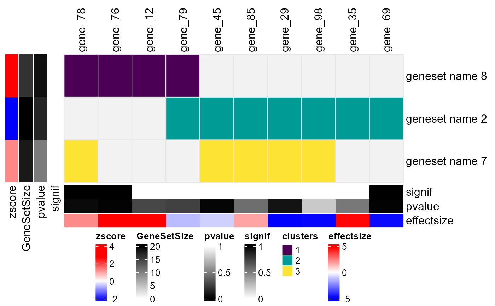

Plot ComplexHeatmap from enrichment analysis results and corresponding genelist
Usage
plot_ComplexHeatmap(
enrichment_result,
genelist,
genes = NULL,
cluster_method = "single",
n_cluster = 1,
n_top_terms = NA,
n_top_genes = NA,
genelist_overlap = NULL,
plot = FALSE
)Arguments
- enrichment_result
dataframe containing enrichment analysis results. Must include
name(gene set names) andsymbol(listed genes associated with gene sets)- genelist
dataframe with gene-level statistics, including at least
symbol,pvalue,effectsize, andsignifcolumns- genes
character, default: NULL, if genes given, these are prioritized for visualization
- cluster_method
default: 'single', else one of hclust methods
- n_cluster
default: 1, integer, number of hierarchical clusters to define
- n_top_terms
default: NULL, if integer, plot only top genesets (recommended for visual clarity: 70)
- n_top_genes
default: NULL, if integer, plot only top genes (recommended for visual clarity: 150)
- genelist_overlap
(Optional) dataframe with gene overlap information, including
symbolandgenelist_overlap, see run_genelists_overlap()- plot
default: FALSE, if TRUE, display drawn ComplexHeatmap
Value
A ComplexHeatmap object displaying genesets (rows) and genes (columns), potentially clustered based on their binary associations. The heatmap includes:
Row annotations: Gene set size, p-value, and average effect size.
Column annotations: Gene p-values, effect sizes, and optional overlap categories.
Customized row/column labels highlighting significant elements.
A color-mapped heatmap showing clustering results.
Examples
plot_ComplexHeatmap(
get(load(system.file("extdata", "example_enrichment.rda", package = "goatea")))[seq.int(1, 3), ],
get(load(system.file("extdata", "example_genelist.rda", package = "goatea"))),
n_cluster = 3,
n_top_genes = 10
)
